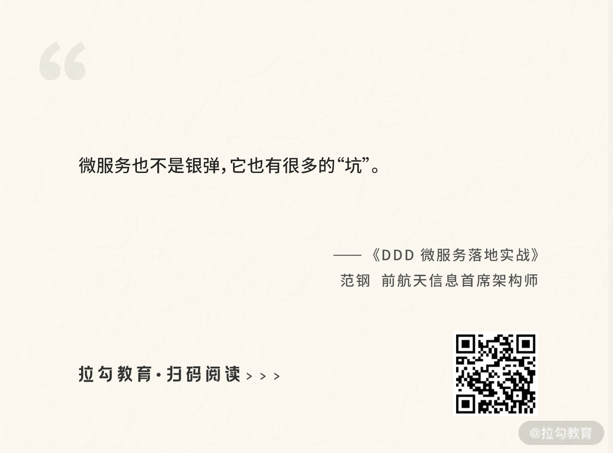
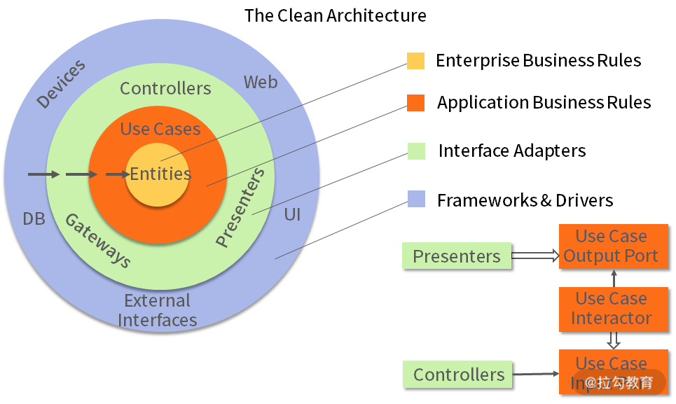

- 00 开篇词 让我们把 DDD 的思想真正落地.md.html
- 01 DDD ：杜绝软件退化的利器.md.html
- 02 以电商支付功能为例演练 DDD.md.html
- 03 DDD 是如何落地到数据库设计的？.md.html
- 04 领域模型是如何指导程序设计的？.md.html
- 05 聚合、仓库与工厂：傻傻分不清楚.md.html
- 06 限界上下文：冲破微服务设计困局的利器.md.html
- 07 在线订餐场景中是如何开事件风暴会议的？.md.html
- 08 DDD 是如何解决微服务拆分难题的？.md.html
- 09 DDD 是如何落地微服务设计实现的？.md.html
- 10 微服务落地的技术实践.md.html
- 11 解决技术改造困局的钥匙：整洁架构.md.html
- 12 如何设计支持快速交付的技术中台战略？.md.html
- 13 如何实现支持快速交付的技术中台设计？.md.html
- 14 如何设计支持 DDD 的技术中台？.md.html
- 15 如何设计支持微服务的技术中台？.md.html
- 16 基于 DDD 的代码设计演示（含 DDD 的技术中台设计）.md.html
- 17 基于 DDD 的微服务设计演示（含支持微服务的 DDD 技术中台设计）.md.html
- 18 基于事件溯源的设计开发.md.html
- 捐赠
00 开篇词 让我们把 DDD 的思想真正落地
你好，我是范钢，曾任航天信息首席架构师，《大话重构》一书的作者。
作为互联网及大数据转型的实践者和倡导者，我先后参与过数十个国内大型软件项目，涉及国家财政、军工、税务、医疗等领域，多次参与大型遗留系统改造、系统重构等重大项目，对系统优化与改造方面有丰富的实践经验。同时，在提供架构设计、软件重构、微服务、大数据方面的培训与企业咨询的这十余年，我服务过的企业包括中国银行、中国人民银行、华为、中兴、贝尔/诺基亚、西门子、富士康等众多知名企业。
不管是做研发，还是做培训与咨询的过程中，我发现大部分公司都面临着一系列软件研发、架构转型的难题，而很大一部分难题，我认为是可能通过 DDD 来解决的。但是在实际工作中，我听到关于 DDD 的说法往往是：DDD 是很抽象，难以学习，无从下手；DDD 听着很厉害，但不能落地；DDD 真的适用微服务吗？ 不妨现在就请暂时放下成见和疑问，先听听我这些年关于 DDD 的故事。
我和我的 DDD
第 1 幕：我与 DDD 的美好邂逅
记得 2006 年，我怀着无比激动的心情开始研读 Eric Evans 写的《领域驱动设计》一书。这的确是本重量级的巨著，我从中学到了太多软件开发的真谛，随后也开始积极地运用在实践中。
但是，多年以后，当经历了无数软件项目的磨炼以后，我扪心自问 DDD 真正用起来了吗？没有，只学到了它的思想，但却没有按照它的方法去实践，这是为什么呢？
DDD 是软件核心复杂性的应对之道，但当时都在忙着开发新项目，如何快速编码开发系统、快速上线才是王道，领域驱动对于客户来说太慢了。并且那个时代，业务也并没有那么复杂，DDD 远远发挥不出应有的优势。但是，最近几年，事情却慢慢发生了变化。
第 2 幕：令人心塞的遗留系统
2012 年，我接手了一个遗留系统改造的任务，该系统是 2002 年开发的，其间经历了大大小小数十次变更，程序已经凌乱不堪了，维护的成本也越来越高。此时，需要通过重构好好优化改造一下，但我发现有许多动辄数千行的大函数与大对象，是软件退化的重灾区，为什么会这样？
深刻思考后，很快意识到问题的根源：这是软件的业务由简单向复杂转变的必然结果。软件会随着变更而越来越复杂、代码也越来越多，这样就不能在原有的简单程序结构里塞代码了，而是要调整程序结构，该解耦的解耦，该拆分的拆分，再实现新的功能，才能保持设计质量。
但是，怎样调整呢？也许第 1 次、第 2 次、第 3 次变更，我们能想得清楚，但第 10 次、第 20 次、第 30 次变更时，我们就想不清楚了，设计开始迷失方向。怎么办？ 我再次陷入了沉思……
经过几番苦苦的思索与探寻，我终于找到了阻止软件退化的钥匙，那就是 DDD。当系统经过数十次变更，设计迷失方向的根源还是复杂性，即业务逻辑与代码变得越来越复杂而难于理解，这不是个例，而是当今所有软件都必须得面对的难题。
运用 DDD，当系统业务变得越来越复杂时，将我们对业务的理解绘制成领域模型，就可以正确地指导软件开发。当系统变更时，将变更业务透过领域模型，还原到真实世界，再根据真实世界去变更领域模型，根据领域模型的变更指导程序变更，就能做出正确的设计，从而低成本地持续维护一个系统。这对于如今生命周期越来越长的软件系统来说，显得尤为重要。
第 3 幕：谁来拯救微服务
2015 年，互联网技术的飞速发展带给了我们无限发展的空间。越来越多的行业在思考：如何转型互联网？如何开展互联网业务？这时，一个互联网转型的利器——微服务，它恰恰能够帮助很多行业很好地应对互联网业务。于是乎，我们加入了微服务转型的滚滚洪流之中。
但是，微服务也不是银弹，它也有很多的“坑”。

当按照模块拆分微服务以后才发现，每次变更都需要修改多个微服务，不但多个团队都要变更，还要同时打包、同时升级，不仅没有降低维护成本，还使得系统的发布比过去更麻烦，真不如不用微服务。是微服务不好吗？我又陷入了沉思。
这时我才注意到 Martin Flower 在定义微服务时提到的“小而专”，很多人理解了“小”却忽略了“专”，就会带来微服务系统难于维护的糟糕境地。这里的“专”，就是要“小团队独立维护”，也就是尽量让每次的需求变更交给某个小团队独立完成，让需求变更落到某个微服务上进行变更，唯有这样才能发挥微服务的优势。

通过这样的一番解析，才发现微服务的设计真的不仅仅是一个技术架构更迭的事情，而是对原有的设计提出了更高的要求，即“微服务内高内聚，微服务间低耦合”。如何才能更好地做到这一点呢？答案还是 DDD。
我们转型微服务的重要根源之一就是系统的复杂性，即系统规模越来越大，维护越来越困难，才需要拆分微服务。然而，拆分成微服务以后，并不意味着每个微服务都是各自独立地运行，而是彼此协作地组织在一起。这就好像一个团队，规模越大越需要一些方法来组织，而 DDD 恰恰就是那个帮助我们组织微服务的实践方法。
第 4 幕：DDD，想说爱你不容易
2018 年，经过一番挣扎，我终于说服了开发团队开始使用 DDD，在这个过程中发现，要让 DDD 在团队中用得好，还需要一个支持 DDD 与微服务的技术中台。
有了这个技术中台的支持，开发团队就可以把更多的精力放到对用户业务的理解，对业务痛点的理解，快速开发用户满意的功能并快速交付上。这样，不仅编写代码减少了，技术门槛降低了，还使得日后的变更更加容易，技术更迭也更加方便。因此，我又开始苦苦求索。
很快，Bob 大叔的整洁架构（Clean Architecture）给了我全新的思路。整洁架构最核心的是业务（图中的黄色与红色部分），即我们通过领域模型分析，最后形成的那些 Service、Entity 与 Value Object。
然而，整洁架构最关键的设计思想是通过一系列的适配器（图中的绿色部分），将业务代码与技术框架解耦。通过这样的解耦，上层业务开发人员更专注地去开发他们的业务代码，技术门槛得到降低；底层平台架构师则更低成本地进行架构演化，不断地跟上市场与技术的更迭。唯有这样，才能跟上日益激烈的市场竞争。

图片来自 Robert C. Martin 的《架构整洁之道》
不仅如此，我在实践摸索过程中，还创新性地提出了单 Controller、通用仓库、通用工厂，以及完美支持 DDD + 微服务的技术中台架构设计。通过这些设计，开发团队能够更好地将 DDD 落地到项目开发中，真正地打造出一支支理解业务、高质量开发与快速交付的团队。
这门课能让你学到什么？
在我的故事里，你有没有看到你自己的影子呢？或者是否会想起在开发中的种种困境呢？
比如：
- 作为微服务开发人员的你，是不是不知道如何拆分和设计？从而导致微服务的拆分不合理，使得软件维护与发布很是困难。
- 作为业务开发人员的你，当业务越来越复杂，特别是需要应对不断出现的新需求时，是不是会发现自己改不动了，从而导致开发的质量越来越差，交付速度也越来越慢？
- 作为系统架构师的你，不知道该如何通过领域建模确认和规划系统边界，抑或不知道如何搭建技术中台，支持业务的快速更迭与架构的快速演进？
所以为了带你走出目前的“窘境”，我和我的团队在使用 DDD 的过程中的实战经验，以及那些踩过的“坑”，共同构成了这个专栏的主体内容。
本专栏综合了重构、高质量软件设计与微服务，将 DDD 的实践最终落实到如何指导开发团队从现有状态逐步转型为领域驱动设计与微服务架构，并通过重构打造支持微服务、支持领域驱动的技术中台，进而实现软件开发交付速度的提升。
- 模块一，软件复杂性的应对之道（01 ~ 06）：通过一系列真实的案例，讲解了如何通过 DDD 去应对越来越复杂的业务系统，并始终保持低成本的维护与高质量的设计。学完这一模块，你将会了解 DDD 的基本概念，以及 DDD 在实际工作中该如何应用。
- 模块二，领域建模过程演练（07 ~ 09）：通过一个在线订餐系统，演练了 DDD 从业务建模、事件风暴，到微服务拆分、技术实现的完整开发过程，深入 DDD 的底层原理与具体实现。学完这一模块，你将可以掌握 DDD 的建模过程，以及在微服务系统中的实战运用。
- 模块三，支持 DDD 的微服务技术中台（10 ~ 13）：主要讲解了如何运用整洁架构，构建一个既支持 DDD，又支持微服务的技术中台，以及如何通过该中台实现业务的快速交付与技术的架构演化。学完这一模块，你将可以以架构师的角度去架构技术中台，并支持开发团队的快速交付与架构演化。
- 模块四，项目实战演练（14 ~ 15）：用两个实战案例去演练，在微服务+人工智能、嵌入式+物联网的项目中，如何运用 DDD 进行业务建模、系统规划与设计实践的过程。这部分可以更好地指导你如何将 DDD 应用到未来的实际项目中。
- 模块五，代码落地演示（16 ~ 17）：为你带来 2 个落地实战的代码演示，帮助你将知识与理论落地到开发实战中。这 2 个演示代码简洁流畅，并且复用性也比较高，你可以直接拿你需要的部分来用。
讲师寄语
最后我想说的是，虽然 DDD 的学习和应用都没有那么容易，但是在这门课里，我将像你身边的一位导师一样，用我这些年的经历、经验、实践与思考，帮你尽可能在轻松高效的状态下学好这门课，并且能够更快、更有效地将 DDD 应用到你的工作中。
相信我，无论你是高级架构师，还是初级开发人员，DDD 整体的架构方法以及其中的设计思路，都会给你的工作带来能量。
© 2019 - 2023 Liangliang Lee. Powered by gin and hexo-theme-book.